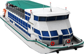

официальный сайт
+7 (495) 744-000-6
работаем 24 часа 7 дней в неделю
Новейший колёсный банкетный теплоход «КолёсовЪ» год постройки 2014 Технические характеристики: длина 36 м, ширина 10 м, осадка 0,8 м, пассажировместимость - до 250 гостей.
Наши преимущества: Уникальный колесный ТЕПЛОХОД. Новейшее оригинальное судно постройки 2014 года. Теплоход идеально подходит для проведения банкетов, праздников, свадеб, дней рождения, тимбилдинга, деловых встреч, семинаров, корпоративных и других мероприятий. Новейшие разработки российских судостроителей позволяют нам говорить о высокой экологичности нашего банкетохода. Отсутствие вибрации и пониженная шумность позволяют ощутить комфорт самым требовательным гостям. КолёсовЪ – второе судно этого проекта. Первое судно было построено и успешно эксплуатируется с 2011 года на российских реках.
Банкетный теплоход КолесовЪ
© Банкетный теплоход КолесовЪ